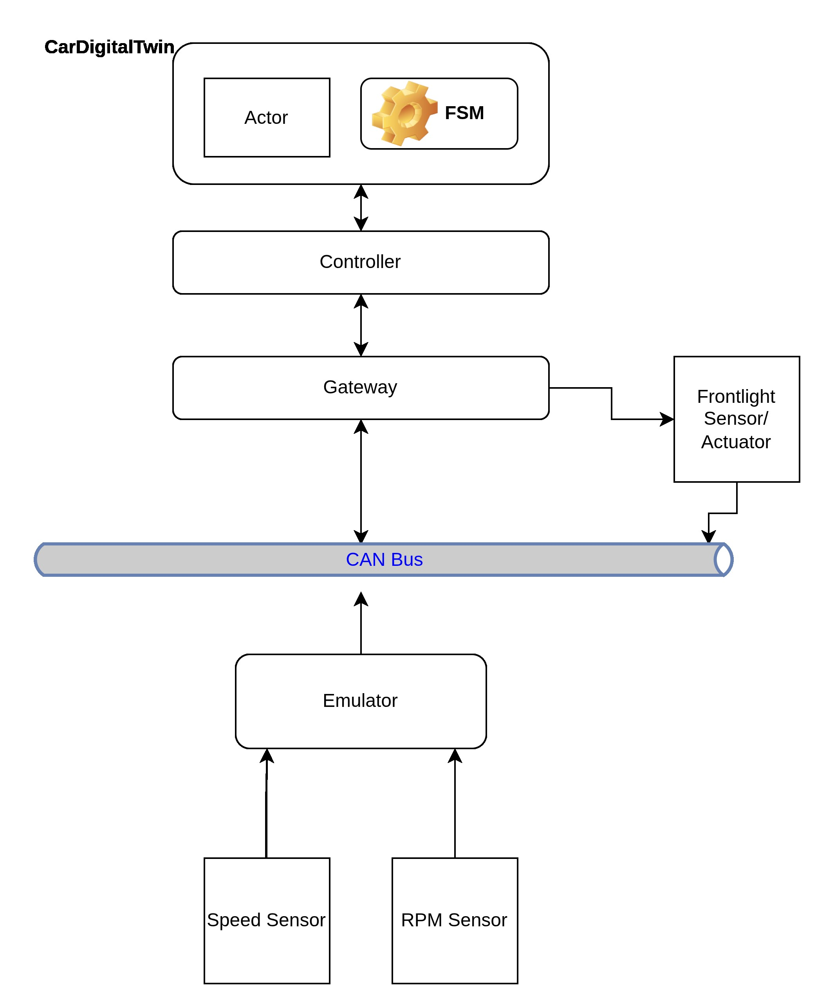
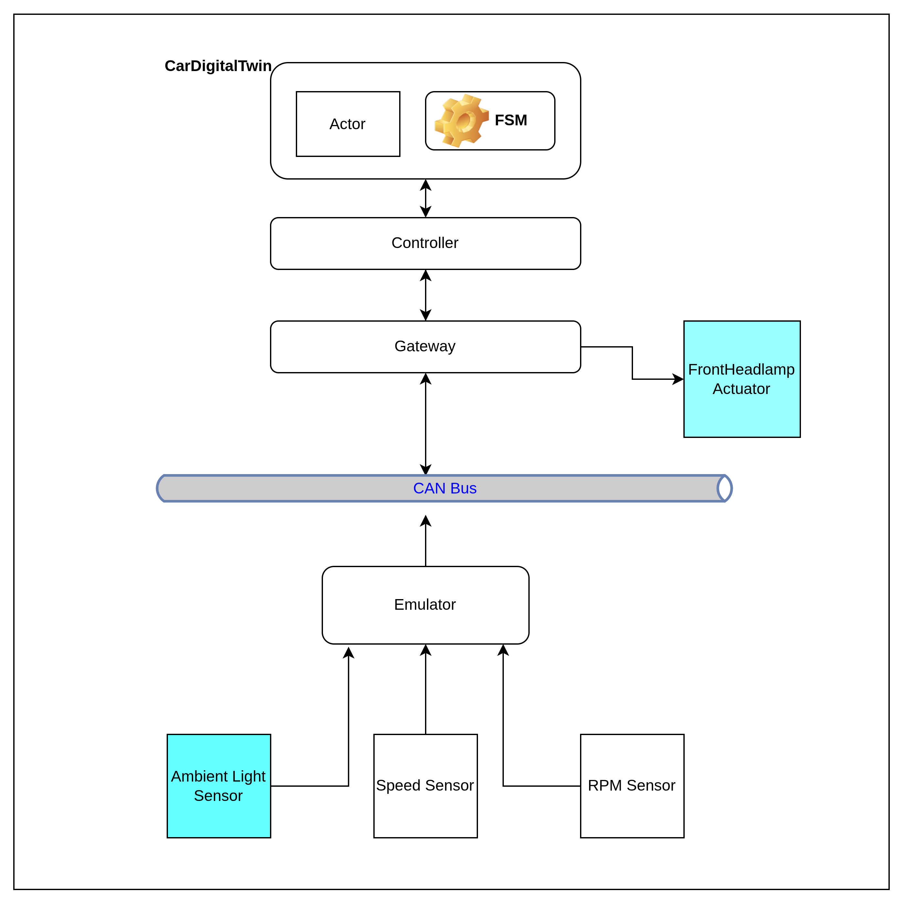
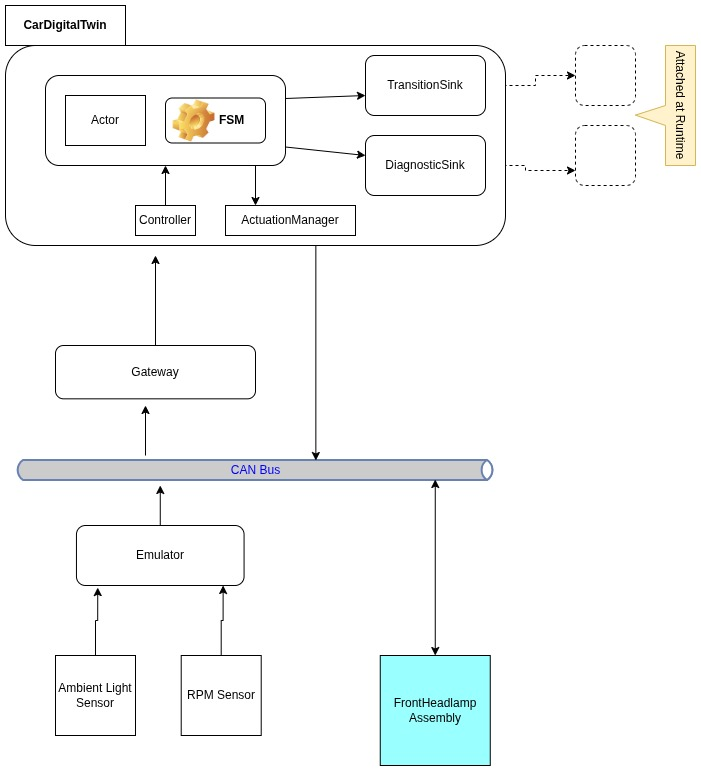
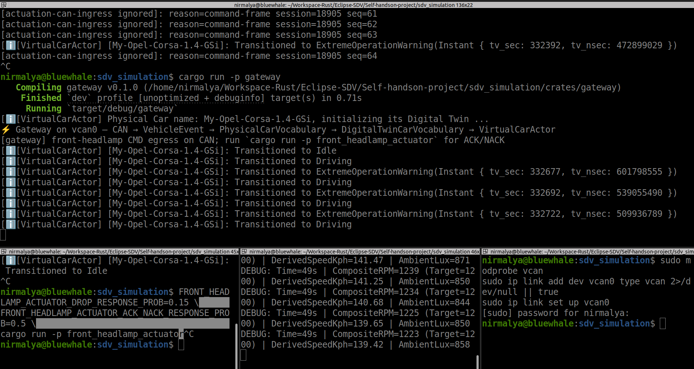
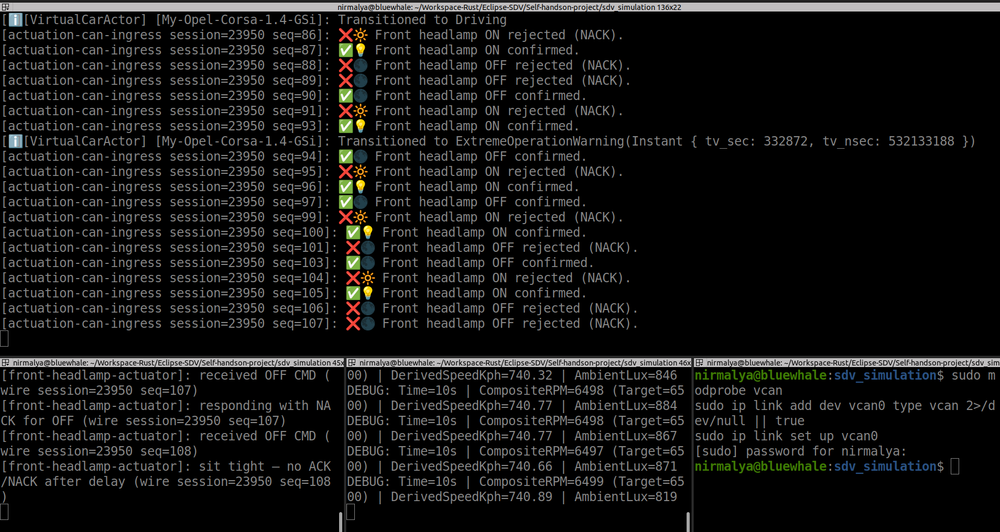

Preface
From the previous blog, we have come to this arrangement:

But, it is too simplistic and doesn't represent how a modern car's signals travel and are processed.
What should change: Frontlight Sensor/Actuator
In the current arrangement, Frontlight Sensor and Actuator are two different components. The Sensor's data arrive through the Emulator.The command for the Actuator is received by an asynchronous code-block behaving as the Frontlight itself. This asynchronous code-block is an adjunct to the Gateway in the picture.
We want to be more accurate in making the connection. The ambient light sensor should tell the car if the visibility around (meaning, what the driver sees) has reduced. The FrontHeadlamp should be actuated accordingly; switched on or off, depending on the visibility.

Again, this is incomplete, because:
-
FrontHeadlamp should be a separate component. The CarDogitalTwin should actuate it through the CAN Bus.
-
CarDogitalTwin will like to know if the FrontHeadlamps are indeed switched on of off. It follows that the FrontHeadlamp must inform the CarDogitalTwin through the same CAN Bus, as well.
What should change: Gateway
The current Gateway plays an important role.
-
It is capable of reading the CAN Bus. In fact, it is the only component that reads the CAN Bus. Tomorrow, it can read some other channel.
-
It is capable of translating messages arriving through the CAN Bus, into internal messages, i.e, messages that the CarDigitalTwin's Actor understands - its own vocabulary.
Additionally, the Gateway also spawns and manages an asynchronous logic, that behaves as the FronHeadlampActuator. The interaction between the actuator and the Gateway happens solely between themselves (using a tokio channel). Thus, the Gateway never has to write anything to the CAN Bus.
But, this is not the correct arrangement. The FrontHeadlampActuator must receive instructions and must acknowledge the status of execution, through the same CAN Bus. For that to happen, the Gateway must also write messages back into the CAN Bus.
A short note about the structure of the messages:
The signals that flow through the CAN Bus - in the form of messages - follow standardized, domain-agnostic data model that organizes automotive signals into a unified, human-readable form named Vehicle Signal Specification (VSS), developed by COVESA (Connected Vehicle Systems Alliance). However, in this project, currently, the Emulator puts every Telemetry data into a locally defined #rustlang enum, instead of using the official VSS Standard Catalog (incorporation that is a TODO for later versions of this project):
pub enum VssSignal {
/// Vehicle.Speed (Unit: km/h,
/// Scaling: 0.01)
VehicleSpeed(f64),
/// Vehicle.Powertrain.CombustionEngine.Speed
/// (Unit: rpm, Scaling: 1.0)
EngineRpm(u16),
/// Vehicle.Cabin or exterior ambient light
/// sensor (Unit: lux, Scaling: 1.0)
AmbientLux(u16),
}What should change: Sensors
The Speed sensor is extraneous. It should go. The RPM Sensor is useful. Is should stay.
In this version, I am using only one RPM Sensor. In a real 4-W car, there will be 4. The speed will be calculated based on the RPM of these wheels and a host of other parameters belonging to a moving car's physics, using specialized mathematical functions. In this project, we are not doing any such complicated calculation. We are going to take one RPM value, multiply that with an approximation factor and arrive at the speed.
What should change: FrontHeadlampActuator
The FrontHeadlampActuator should not remain an appendage of the Gateway (refer to the picture above). The DigitalTwin should interact with it, through the CAN Bus, using VSS Signals.
What should change: DigitalTwin must emit its latest status; its view of the what's happening in the physical car, right not. For that to happen, the DigitalTwin should run an information-stream, which we should be able to see. For the time being, we will use stdout for the purpose. The stdout will be the dashboard, if you like!
After the changes..
The arrangement is like the following:

Explanation
The updated prototype is built from three executables, each run in its own shell:
- Gateway — hosts the CarDigitalTwin application (see below) and is the sole bridge between that application and the CAN Bus.
- Emulator — stands in for the physical car’s sensors; it publishes telemetry onto the CAN Bus.
- FrontHeadlamp Assembly — a separate process that models a zonal ECU for the front headlamp subsystem.
CAN Bus. The bus is Linux’s own Virtual CAN (SocketCAN), exposed as a virtual network interface. The default name is vcan0. All cross-process traffic in this prototype goes through that interface.
CarDigitalTwin (one application). Inside the Gateway executable, Gateway, Controller, Actor, and FSM work together as a single application. A deliberate design rule keeps the Digital Twin ignorant of raw CAN bytes: it speaks only its own vocabulary—DigitalTwinCarVocabulary wrapping FsmEvent messages (plus request/reply such as GetStatus). Everything that arrives from the wire is normalized elsewhere. Gateway decodes CAN frames into VehicleEvent / PhysicalCarVocabulary (telemetry, timer ticks, headlamp ACK/NACK, and so on). Controller projects that physical vocabulary into the twin’s vocabulary before anything reaches the Actor. On egress, domain actions from the FSM are turned back into CAN actuation frames by the Gateway. The Actor never parses a CAN ID; it only reacts to vocabulary it already understands.
The ingress chain is explicit in code:
// Gateway: CAN frame → VssSignal → VehicleEvent → PhysicalCarVocabulary
let ev = VehicleEvent::TelemetryUpdate(sig);
let physical = ingress::vehicle_event_to_physical_vocabulary(ev);
// … forwarded to the controller …
controller.submit_physical_car_event(physical).await?;// Controller: PhysicalCarVocabulary → DigitalTwinCarVocabulary (twin vocabulary)
pub async fn submit_physical_car_event(
&self,
event: PhysicalCarVocabulary,
) -> Result<(), VehicleControllerError> {
let msg = self.projector.project(event)?;
self.actor.send_message(msg).await?;
Ok(())
}The projector is where physical-side wording becomes FSM events the twin actually consumes:
// PhysicalCarVocabulary → FsmEvent → DigitalTwinCarVocabulary::Fsm(...)
PhysicalCarVocabulary::TelemetryUpdate(VssSignal::EngineRpm(rpm)) => {
FsmEvent::UpdateRpm(rpm)
}
PhysicalCarVocabulary::FrontHeadlampCommandConfirmed { on_command: true } => {
FsmEvent::FrontHeadlampOnAck
}
// …
Ok(DigitalTwinCarVocabulary::Fsm(fsm))The twin’s mailbox vocabulary stays separate from the bus:
pub enum DigitalTwinCarVocabulary {
/// Drive the FSM (`fsm::step` derives context from event payloads).
Fsm(FsmEvent),
GetStatus(RpcReplyPort<DigitalTwinCar>),
}Actor and FSM together. The Actor’s main loop is intentionally thin: for each DigitalTwinCarVocabulary::Fsm(evt) message it calls fsm::step with the current state and context, persists the returned next state and context, then executes any domain actions (for example, requesting a headlamp switch). Behaviour is therefore fully determined by (a) which events arrive in the twin vocabulary and (b) which transitions the FSM defines for those events.
match message {
DigitalTwinCarVocabulary::Fsm(evt) => {
let result = fsm::step(
&runtime_state.twin_car.current_state,
&runtime_state.twin_car.context,
&evt,
std::time::Instant::now(),
);
runtime_state.twin_car.current_state = result.next_state.clone();
runtime_state.twin_car.context = result.modified_ctx;
for action in result.actions {
runtime_state.actuation_manager.execute(&action, &runtime_state.twin_car).await?;
}
Ok(())
}
// …
}A small slice of the transition table shows the same contract from the FSM side—here, ignition and motion:
match current_state {
FsmState::Off => match event {
FsmEvent::PowerOn if current_ctx.is_healthy() => {
TransitionResult { next_state: FsmState::Idle, note: None }
}
// …
}
FsmState::Idle => match event {
FsmEvent::UpdateRpm(rpm) if *rpm > 1000 => {
TransitionResult { next_state: FsmState::Driving, note: None }
}
// …
}
// …
}Separately, step applies lighting policy when context events such as UpdateAmbientLux arrive—still driven only by FsmEvent, not by CAN layout. That is why swapping the CAN codec tomorrow should touch Gateway and the projector, not the Actor or the transition table.
Emulator. The Emulator embeds the logic needed to synthesize sensor readings at the appropriate rates (for example, RPM and ambient lux). Each reading is encoded in a user-defined CAN data format aligned with the project’s local VssSignal enum (shown above), rather than the full COVESA catalog—for now.
FrontHeadlamp Assembly. This executable is independent of the Gateway process. It represents a zonal ECU: it receives headlamp commands over the CAN Bus, drives the (simulated) actuator, and reports headlamp status back on the same bus so the CarDigitalTwin can confirm whether the lamps are actually on or off.
Dashboard on stdout. The CarDigitalTwin emits a continuous stream of status and diagnostic messages—its current view of the vehicle. For this stage, every such message is written to stdout, which acts as the default sink and serves as a simple dashboard while the prototype runs.
How to run
You need a Linux host with SocketCAN and a Rust toolchain. The prototype does not fold everything into one launcher: four separate bash shells are required—one to bring up the virtual bus, and one each for the three executables.
Shell 1 — CAN interface (vcan0). Create and raise the virtual CAN device once (sudo as needed):
sudo modprobe vcan
sudo ip link add dev vcan0 type vcan 2>/dev/null || true
sudo ip link set up vcan0Leave this shell free, or use it only for setup; the link stays up until you delete it.
Shell 2 — Emulator (sensor telemetry onto the bus):
cargo run -p emulatorShell 3 — FrontHeadlamp Assembly (zonal ECU; ACK/NACK on the bus):
cargo run -p front_headlamp_actuatorShell 4 — Gateway (digital twin + CAN ingress/egress; dashboard on stdout):
cargo run -p gatewayStart Shell 1 first, then 2 and 3, then 4 so the bus and body ECU are ready before the gateway attaches. Useful gateway flags: --print-timer-tick, --print-transitions, --trace-actuation-ingress (see the project README). Stop with Ctrl+C in each process shell; tear down the interface when finished: sudo ip link del vcan0.
Demo screenshots
Still frames from a live three-process run on vcan0 (emulator, gateway, front-headlamp actuator). Both show the same gateway stdout surface—FSM transitions, RPM/lux telemetry, and (when lighting rules fire) headlamp actuation—under different ambient-light conditions. (Full-size copies also live in the project README.)
Daylight band (headlamp off) — ambient lux stays above the OFF threshold (LUX_OFF 860). The twin keeps LightingState::Off; the gateway log has no headlamp CMD or ACK/NACK lines.

Tunnel / dim band (headlamp on) — lux falls through the ON threshold (LUX_ON 840), the twin requests ON, the gateway sends a headlamp CMD on CAN, and the actuator reply appears as a positive ACK (or NACK / timeout on failure paths).

Summary
What this phase achieved
- Moved from a two-process demo (gateway + emulator) with an in-gateway headlamp stub to a bus-centric layout on Linux
vcan0(SocketCAN). - Three executables on the wire: emulator, gateway, front_headlamp_actuator—telemetry and actuation share one CAN bus.
- Gateway reads and writes CAN; the front headlamp is a separate zonal ECU, not a Tokio channel inside the gateway.
- Closed-loop headlamp control: ambient lux → twin requests ON/OFF → CMD on CAN → ACK/NACK (or timeout) back through the same path.
- Digital twin unchanged in spirit—actor + FSM—with behaviour driven only by
FsmEventafter Gateway/Controller projection from raw CAN. - Telemetry focused on RPM and ambient lux; speed derived in the twin (no separate speed sensor on the bus in this milestone).
- Layered vocabularies (
PhysicalCarVocabulary→DigitalTwinCarVocabulary) so the twin stays ignorant of frame layout. - stdout as a live dashboard (see demo screenshots above)—no separate HMI yet.
Where the code is
- Repository:
sdv_simulation_1on GitHub — clone and build withcargo. - Operational reference: project README (crate layout, wire IDs, tests, flags, demo assets).
- Main crates:
emulator,gateway,front_headlamp_actuator,common(FSM, actor, projection),vehicle_device_bus(headlamp codec and ingress policy). - This post is the narrative; the README on
mainis the current truth for running and extending the prototype.
Series: Prototyping a Software Defined Vehicle
← Previous Stage I
All posts in this series: sdv-prototype